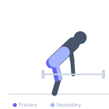
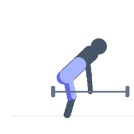

Exercise guide / Jefferson Deadlift — Alternating Grips
Jefferson Deadlift — Alternating Grips
The Jefferson deadlift is a unique straddle-stance deadlift where the barbell passes between the lifter's legs and the two hands grip the bar at different positions — one in front and one behind. This unconventional stance loads the spine asymmetrically in rotation while the hips and legs drive the bar upward. By alternating which hand is in front and which is behind across sets, the rotational loading is balanced. The Jefferson deadlift challenges hip adductor strength, core anti-rotation, and hip external rotation simultaneously.
Primary muscles
gluteus maximus
biceps femoris long head
adductor magnus
Secondary muscles
erector spinae
rectus femoris
internal oblique
Stabilizers
transverse abdominis
Equipment
Standard Barbell


Starting position
- Straddle the barbell with one foot in front and one foot behind, feet approximately shoulder-width apart in a lunge-like orientation. Bend down to grip the bar with one hand in front of the leading thigh and one hand behind the trailing thigh.
Setup
- Begin with a light load to learn the unusual stance geometry. The bar should sit at the same height as a standard deadlift. Alternate which side is 'leading' every set.
Steps
- Step 1: Straddle the barbell with one foot forward and one back. Grip the bar with an overhand grip on both hands — one in front, one behind.
- Step 2: Take a breath, brace the core, and begin the pull by driving both feet into the floor simultaneously.
- Step 3: Rise to standing, keeping the bar close to the body (it will pass between the thighs).
- Step 4: Lower the bar under control by hinging at the hips and bending the knees until the bar returns to the floor.
Coaching cues
- Both feet drive into the floor equally — this is a squat-deadlift hybrid
- Keep the bar between the thighs, not to one side
- Switch your foot and grip orientation every set to balance the rotational load
Breathing
- Inhale and brace before the pull. Exhale at the top or during the descent.
Range of motion
- Full deadlift range — bar from floor to full hip extension at the top.
Tempo
- 2s pull, 1s lockout, 3s eccentric lower
Common mistakes
- Setting up with too narrow a stance — the bar must pass between the thighs cleanly
- Not alternating grip orientation across sets — this causes asymmetrical loading over time
- Rounding the lower back as the bar rises through the thighs
Safety
- The Jefferson deadlift places rotational stress on the spine — start light and prioritize technique before loading
- Keep the spine neutral throughout — no twisting of the torso to assist the lift
Training
- strength: 3–6 reps
- endurance: 5–10 reps
- strength: 3–4 sets
- endurance: 2–3 sets
- Rest: {'strength': 180, 'endurance': 90}